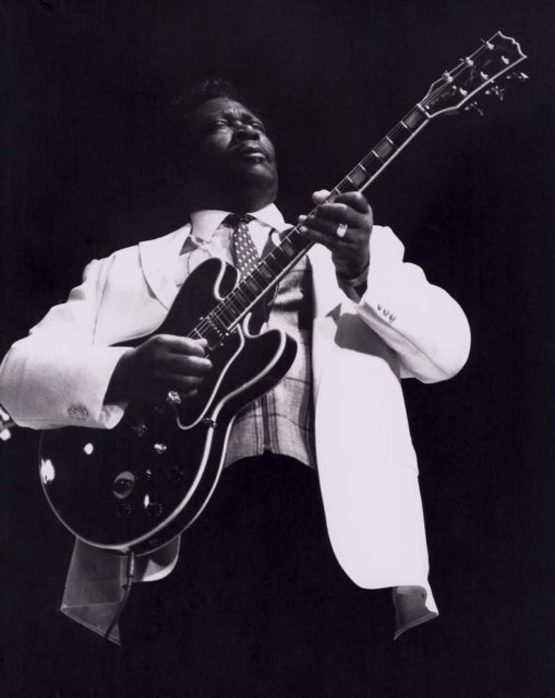

Riley B. King (September 16, 1925 – May 14, 2015), known professionally as B.B. King, was an American blues singer-songwriter, guitarist, and record producer. He introduced a sophisticated style of soloing based on fluid string bending, shimmering vibrato and staccato picking that influenced many later blues electric guitar players.[5][6] AllMusic recognized King as "the single most important electric guitarist of the last half of the 20th century".[6]
King was inducted into the Rock and Roll Hall of Fame in 1987, and is one of the most influential blues musicians of all time, earning the nickname "The King of the Blues", and is considered one of the "Three Kings of the Blues Guitar" (along with Albert King and Freddie King, none of whom are blood related).[7][8][9] King performed tirelessly throughout his musical career, appearing on average at more than 200 concerts per year into his 70s.[10] In 1956 alone, he appeared at 342 shows.[11]
King was born on a cotton plantation in Itta Bena, Mississippi, and later worked at a cotton gin in Indianola, Mississippi. He was attracted to music and the guitar in church, and began his career in juke joints and local radio. He later lived in Memphis, Tennessee and Chicago, and as his fame grew, toured the world extensively. King died at the age of 89 in Las Vegas, Nevada, on May 14, 2015.
Riley B. King was born on September 16, 1925,[12] on the Berclair cotton plantation near the town of Itta Bena, Mississippi,[6][13] the son of sharecroppers Albert and Nora Ella King.[13] He considered the nearby city of Indianola, Mississippi to be his home.[14] When King was four years old, his mother left his father for another man, so he was raised by his maternal grandmother, Elnora Farr, in Kilmichael, Mississippi.[13]
While young, King sang in the gospel choir at Elkhorn Baptist Church in Kilmichael. King was attracted to the Pentecostal Church of God in Christ because of its music. The local minister performed with a Sears Roebuck Silvertone guitar during services. The minister taught King his first three chords.[15] It seems that at the age of 12 he purchased his first guitar for $15.00,[16][13] although another source indicates he was given his first guitar by Bukka White, his mother's first cousin (King's grandmother and White's mother were sisters).[17]
In November 1941, "King Biscuit Time" first aired, broadcasting on KFFA in Helena, Arkansas. It was a radio show featuring the Mississippi Delta blues. King listened to it while on break at a plantation. A self-taught guitarist, he then wanted to become a radio musician.[18]
In 1943, King left Kilmichael to work as a tractor driver and play guitar with the Famous St. John's Gospel Singers of Inverness, Mississippi, performing at area churches and on WGRM in Greenwood, Mississippi.[19][20]
Poster of B.B. King and Bill Harvey and Orchestra with photo of B.B. King holding his guitar and Evelyn Young playing saxophone
In 1946, King followed Bukka White to Memphis, Tennessee. White took him in for the next ten months.[13] However, King returned to Mississippi shortly afterward, where he decided to prepare himself better for the next visit, and returned to West Memphis, Arkansas, two years later in 1948. He performed on Sonny Boy Williamson's radio program on KWEM in West Memphis, where he began to develop an audience. King's appearances led to steady engagements at the Sixteenth Avenue Grill in West Memphis, and later to a ten-minute spot on the Memphis radio station WDIA.[21] The radio spot became so popular that it was expanded and became the Sepia Swing Club.[22]
He worked at WDIA as a singer and disc jockey, where he was given the nickname "Beale Street Blues Boy", later shortened to "Blues Boy", and finally to B.B.[23][24][25] It was there that he first met T-Bone Walker. King said, "Once I'd heard him for the first time, I knew I'd have to have [an electric guitar] myself. 'Had' to have one, short of stealing!"[26]